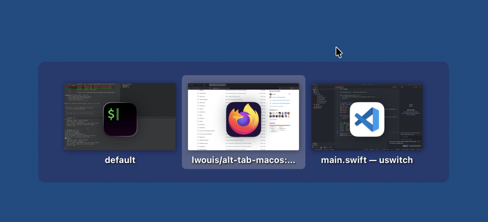

A keyboard-first window switcher for macOS. Live thumbnails, MRU order, Esc that doesn't leak.
Why this exists
What it does
Each tile is your window now — captured the moment the overlay opens. No stale crops from twenty minutes ago.
The second tile is always your most-recently-used window. Tap Tab once and you're back where you came from. The Alt+Tab muscle memory works as it should.
A small badge keeps you oriented at a glance — Safari from Xcode from iTerm, even when the thumbnails look alike.
Press Escape and the overlay closes. Nothing else happens. Your iTerm Cmd+Esc binding stays asleep. Your editor stays out of normal mode.
Tab to advance, Shift+Tab to reverse. Release Cmd to raise the selected window — or hit Escape to vanish the overlay without a trace.
A background cache keeps thumbnails warm between presses. The overlay is on screen before your finger leaves the Tab key.
Keys
In the wild

The overlay, as it actually appears.
A small native Swift app. macOS 13+. Source on GitHub.